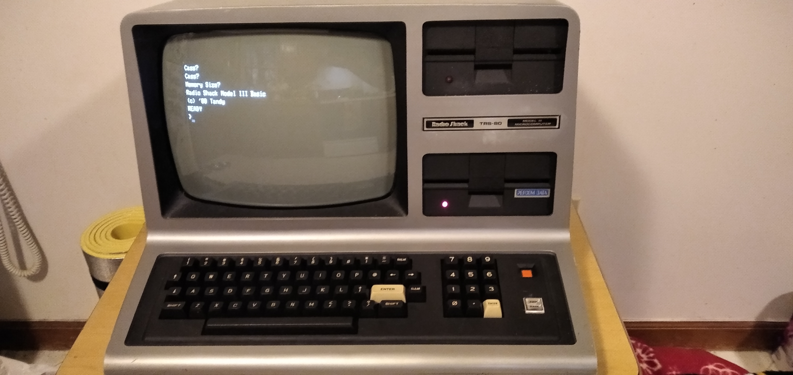

Introduction
My main focus is on computers, I’ve been studying them for years, and went into the IST trade in Cheney Tech. I can do many things with them, some being installing operating systems, using various OSs like Windows and Linux based OSs, writing software, doing both frontend and backend development on websites, setting up and maintaining servers, disassembling and fixing many different types of computers (desktops, laptops, phones, consoles, servers), am able to do many more things. I serve as an admin in my IST shop, where I work with and assist users, control what permissions they have, create/delete accounts, and maintain the shop PCs. In this, I have been recognised with the IST creativity award in 2021 and the IST Leadership award in 2022. I hope to continue my education through both school and work.

This is my TRS-80 Model III running BASIC.